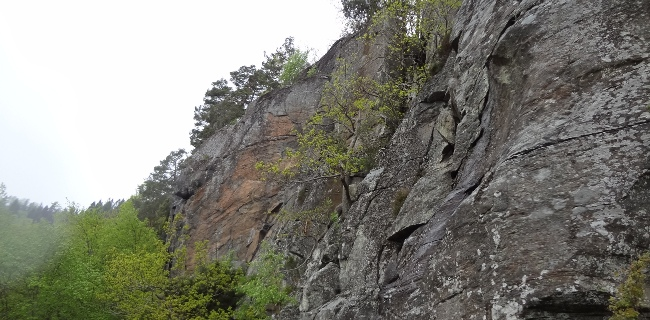

Lat: 57.7702607272836 Long: 12.221088409423828
Kategori:2 stjärnor
Category:sport
Trevlig klippa ovanför sjön, med mestadels bult men även en del kil. Överkomliga grader. Ta ett dopp efter klätterdagen, antingen från bryggan nedanför klippan, eller vid badstranden i sjöns norra ände. Ta med skräp härifrån!
Klätterklippa med lite längre (20 meter) vertikala turer, och turer med brant svakaraktär, det mesta är lättare än 7a. Merparten ganska skuggigt. Väldigt många människor klättrar här, ofta får man stå i kö för de finare lederna. Ta med skräp härifrån. Visa hänsyn mot andra klättrare. Använd alltid egna karbiner i firningsankarna!
På
Fikahyllan
klättrar många nybörjare.
Om du kör av vid Hulanmotet, kör längs med motorvägen. Sväng vänster i rondellen skylt mot Aspenäs, sedan vänster igen. Fortsätt svänga vänster så ofta du kan. Följ Goråsvägen. Efter att du har passerat en gammal lada på varje sida av vägen dyker en grusparkering på höger sida upp, ställ bilen här!
Ta tåg till Aspedalen, beställ taxi till klippan därifrån.
Väggen som ligger längst bort ifrån parkeringen, för att komma hit gå längs med vägen tills klippan tar slut och gå in i skogen. Ca 20m hög vägg med flera borrbultade turer. Den finaste är antagligen leden med samma namn som väggen, Nalle Puh(5c).
Ligger ovanför Nallepuh. Se till att inte sparka ner sten eller tappa saker på de som klättrar i Nalle Puh.
Höger om Nalle Puh-området eller rakt nedanför Highway-hyllan. En del svårare leder, inklusive Sheriffen.
Highway-hyllan rekommenderas! Lättaste vägen är att gå skrambla ovanför Fikahyllan och följa bergets topp tills ni ser två firningsankare som tillhör Highway 66 och Sonic Youth. Insteget till sportlederna har två limbultar. Var försiktig så ni inte sparkar ner sten på Sheriffen, tänk på att ropa "Sten!".
Ovanför fikahyllan, skrambla ner eller klättra någon led mellan Svarta leden och Mr-100 upp.
Låt bli att topprepa direkt i ringarna! Använd egna karbiner. Från parkeringen gå in i skogen men parallellt med vägen, uppför.
Kategori:Göteborg
Höger om parkeringen, istället för vänster om parkeringen där alla andra leder finns. 5-6 bultade leder av måttlig kvalité. Utrustade med firningsankare. Rekommenderas varma sommardagar då det är för varmt för att vara på fikahyllan eller då det är fullt av klättrare på alla andra områden av Aspen (händer).
Copyright (C) Permission is granted to copy, distribute and/or modify this document under the terms of the GNU Free Documentation License, Version 1.3